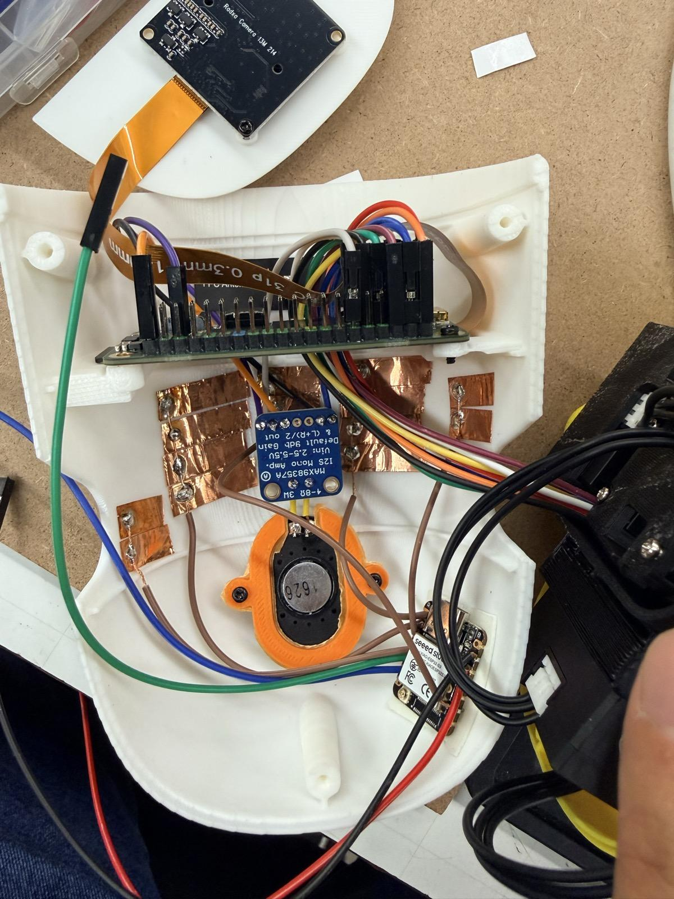
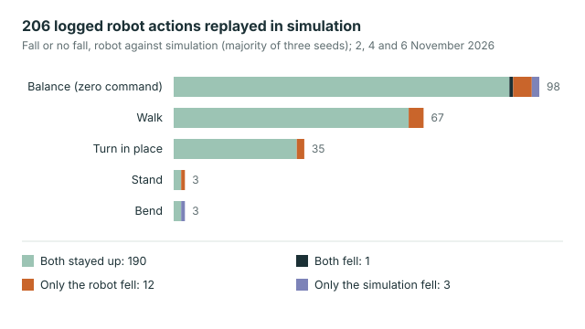
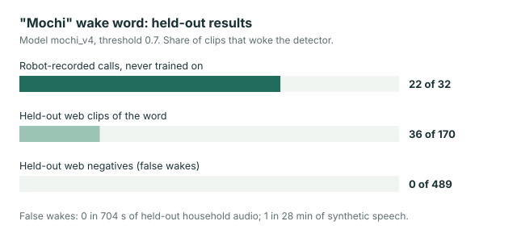

Hardware and bring-up
Custom printed parts, servo-chain assembly, dual-host OpenRB controller firmware, an A7Z head computer, camera and inertial sensor, touch pads, speaker, and power integration.
Personal hardware build · Robot learning
A low-cost walking robot for testing how perception, learned control, and physical hardware behave together.
My role Continuing personal project: I built and integrated the robot and developed controller/runtime extensions, the as-built simulation, evaluation checks, and learning experiments. Camera-guided pickup is also the research topic of our five-person CMU 16-831 course team.
A policy that walks in a simulator still has to run through an imperfect servo chain, delayed measurements, flexible printed parts, power limits, and a small onboard computer.
I built this 15-joint MicroDuck at the CMU RoboClub from Pollen Robotics' open design and a community build tutorial, then made its physical behavior measurable.
Also in progress: a flight pack that exists in simulation only.
Custom printed parts, servo-chain assembly, dual-host OpenRB controller firmware, an A7Z head computer, camera and inertial sensor, touch pads, speaker, and power integration.
Heading hold, touch-triggered stop and hold, camera streaming, event logs, and controls for standing, walking, and scripted behaviors.
A model aligned with the assembled robot, measured joint and sensing limits, acceptance scenarios, and checks that distinguish real hardware conditions from stress tests.
Reward-term audits and policy comparisons. An early fine-tune increased total reward by standing still; decomposing the reward exposed that failure before deployment.

The target behavior is a continuous sequence: find an object, approach it, bend while balancing, grasp with the beak, and return upright. Each part needs its own evidence.
The as-built simulation is only useful for decisions where it predicts what the robot did. To check, I replay logged robot actions in the simulation: each action gets the commands the robot actually received, at their own times, with the supply voltage and share of dropped servo reads from the same log. Each replay runs on three seeds, and the outcome is compared with the robot's: fall or no fall.

In the first count, 199 of 211 replayed actions agreed with the robot on fall or no fall. Of those, 189 were actions in which neither fell.
A stricter recount charges each robot fall to one action and does not credit the simulation with a fall that only follows the robot's own replayed stop command. It covers 206 actions: 190 stayed up in both, 1 fell in both, 12 fell only on the robot, and 3 fell only in simulation.
So the simulation reproduced one robot fall on its own and missed twelve. In a separate 12-run comparison its trunk shake was 0.10 to 0.44 of the robot's. A simulation pass is not evidence that the robot will stay up.
Three microphones in the head feed a wake-word detector that runs on the robot's own computer with no server. When it hears "Mochi" it estimates which side the call came from, quacks, and searches for a face with the camera; the head turns toward the caller only when the robot is standing still or seated. The response is a system service that starts at power-on.

Hand-rolled models failed first; one turned out to detect a voice, not the word. The deployed detector follows standard practice: a small classifier trained on the frozen openWakeWord embedding. Positives are people saying the word in 80 public videos from 65 channels plus calls recorded on the robot.
In a live check on November 4, three calls each produced a quack and a camera face event. In a live run on November 2, the side estimate was right on 8 of 9 calls.
Limits: recall is modest and varies by recording (from 3 of 8 to 8 of 8), the robot-recorded calls are my own voice, live testing has been short, and the detector does not yet hear its name while the robot walks (2 of 8 with walking noise).
Pollen Robotics supplies the original design, training environment, and standing/walking policies. AI-FanGe's community tutorial supplies the starting build set and Raspberry Pi runtime. CMU RoboClub provides shared tools and printers. The wake word uses the open-source openWakeWord embedding and an off-the-shelf face detector. My work is the physical build and extensions described above.
Hardware demonstrations are dated in their captions. Current work continues in the training repository.